Personal Project · Website Redesign
Tiffany & Co.
A personal redesign exploring luxury brand storytelling, navigation, and product presentation.
Independent portfolio concept. Not commissioned by or affiliated with Tiffany & Co.
Original project boards are presented in Korean.
01 · Project overview
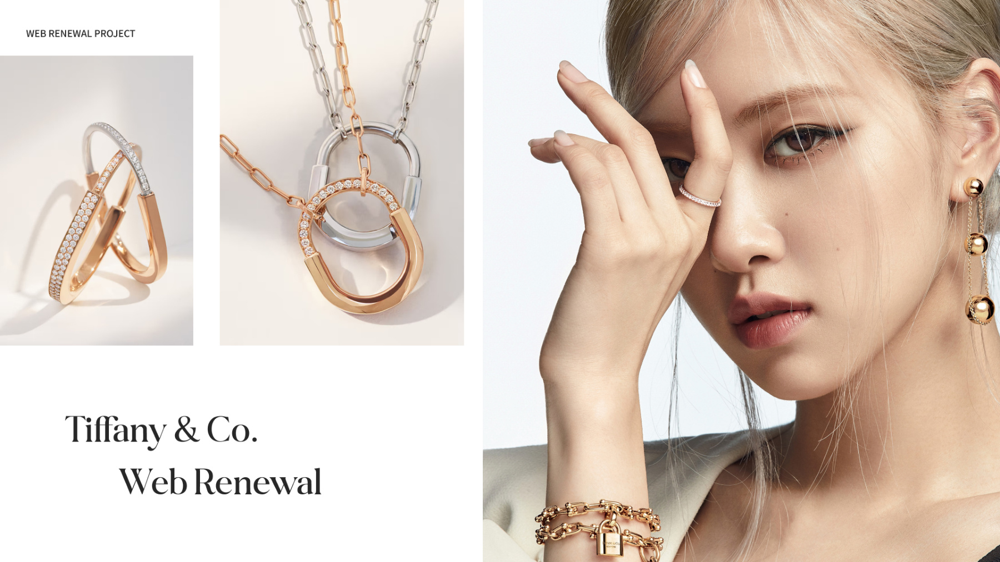
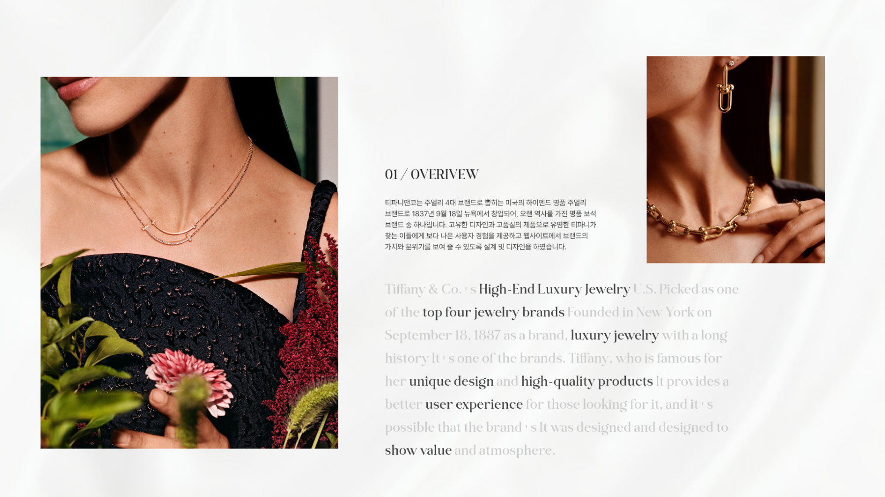
02 · Research
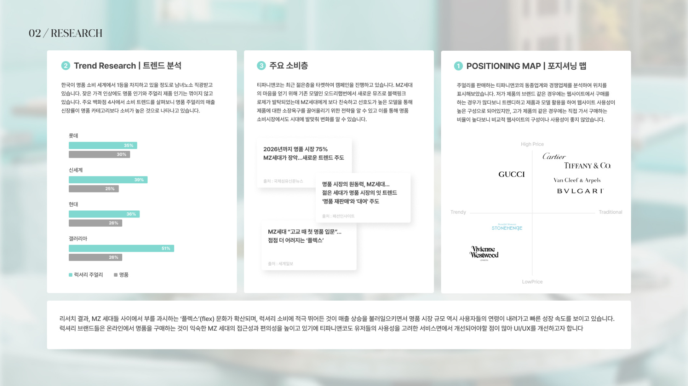
03 · Before & after / Design direction
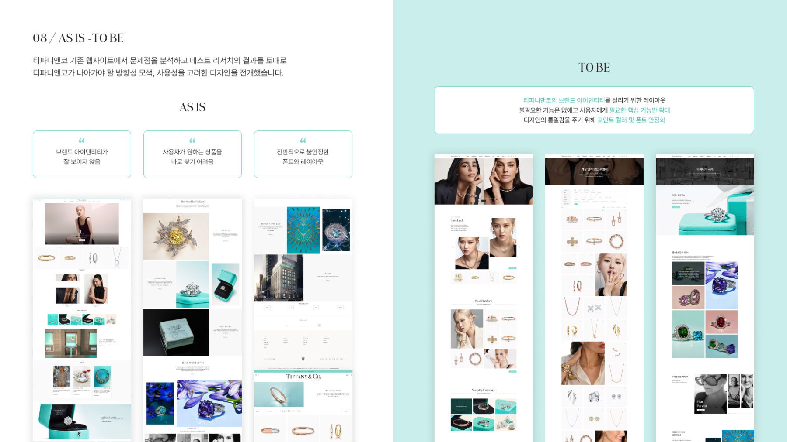
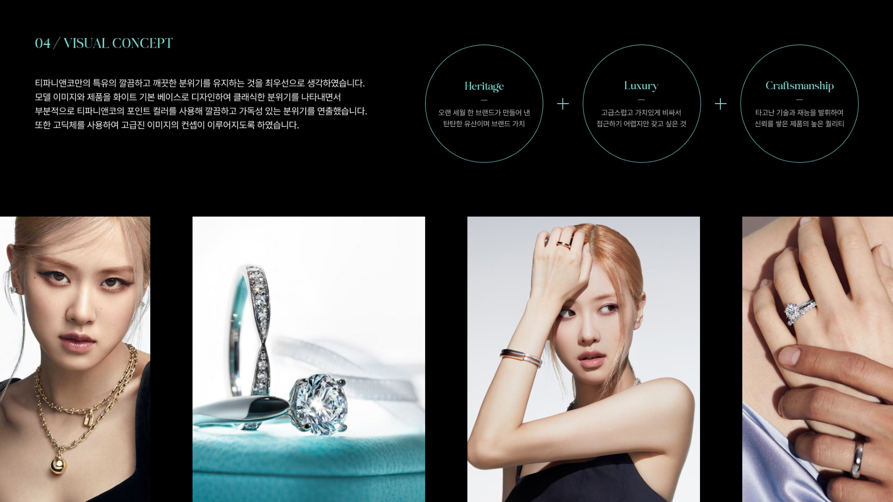
04 · Style guide & layout grid
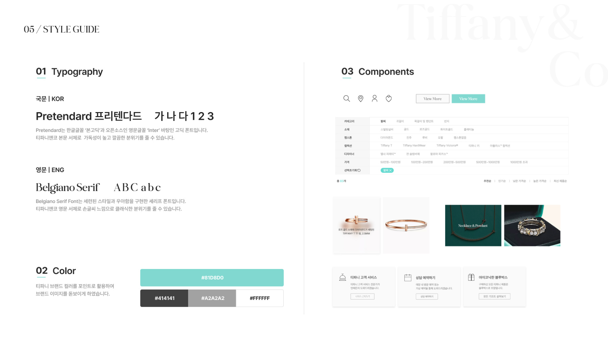
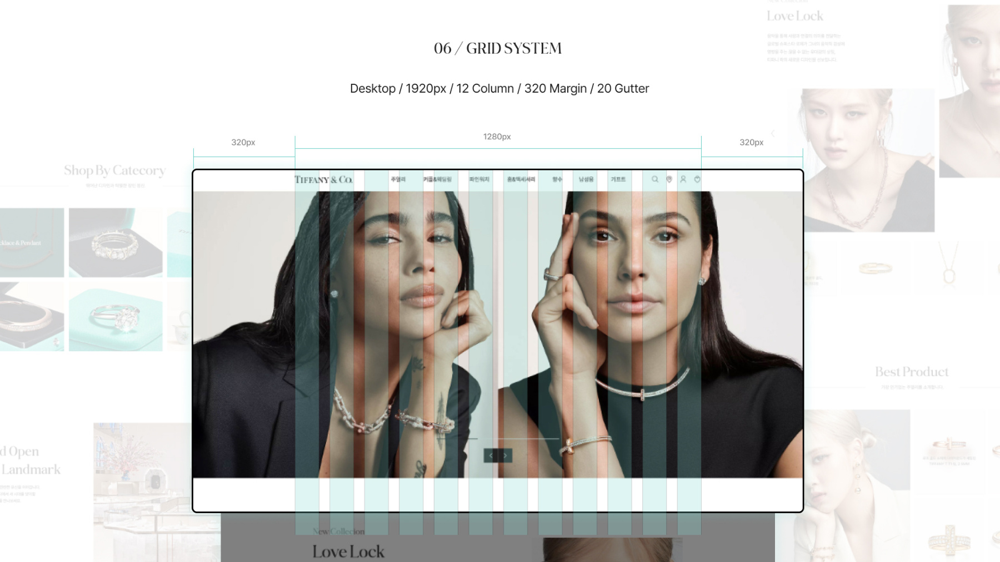
05 · Homepage
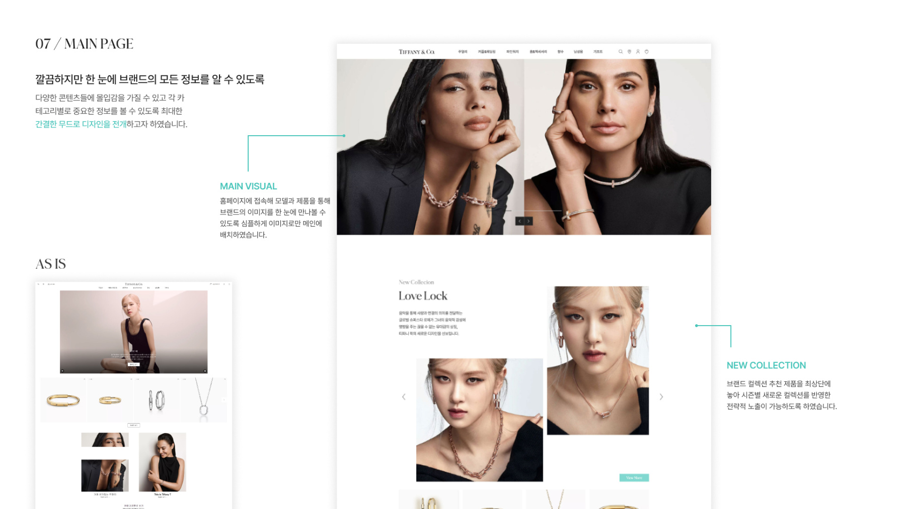
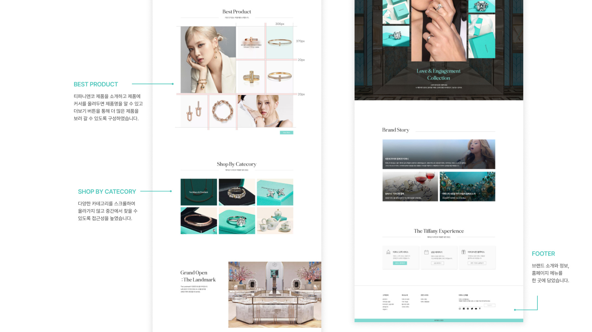
06 · Brand storytelling
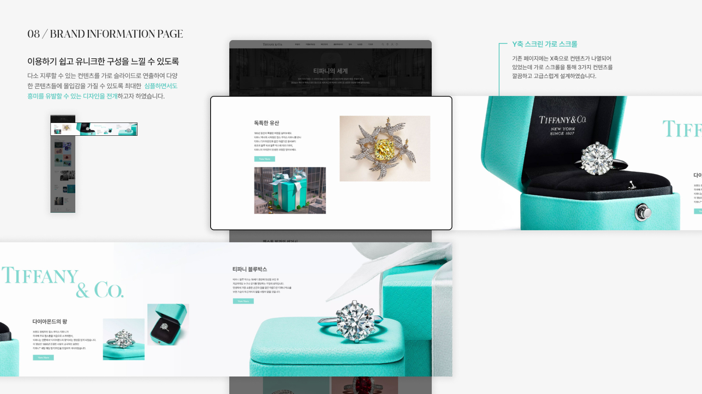
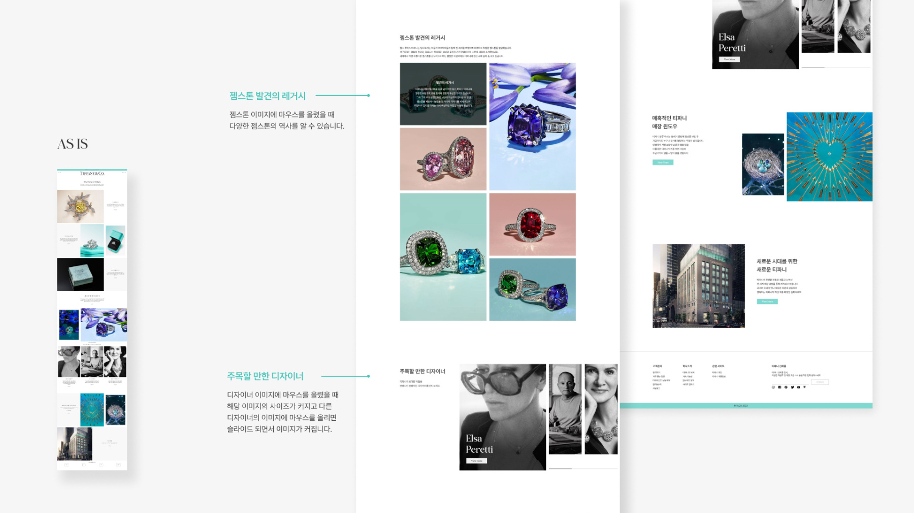
07 · Product listing
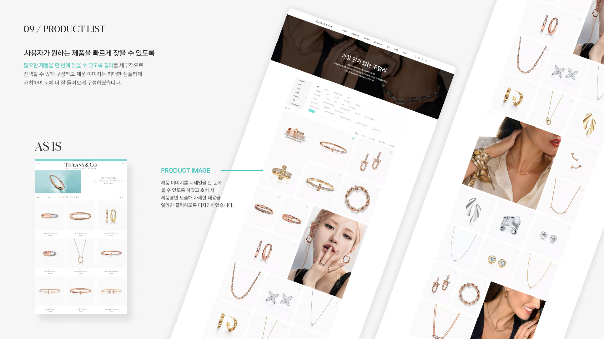
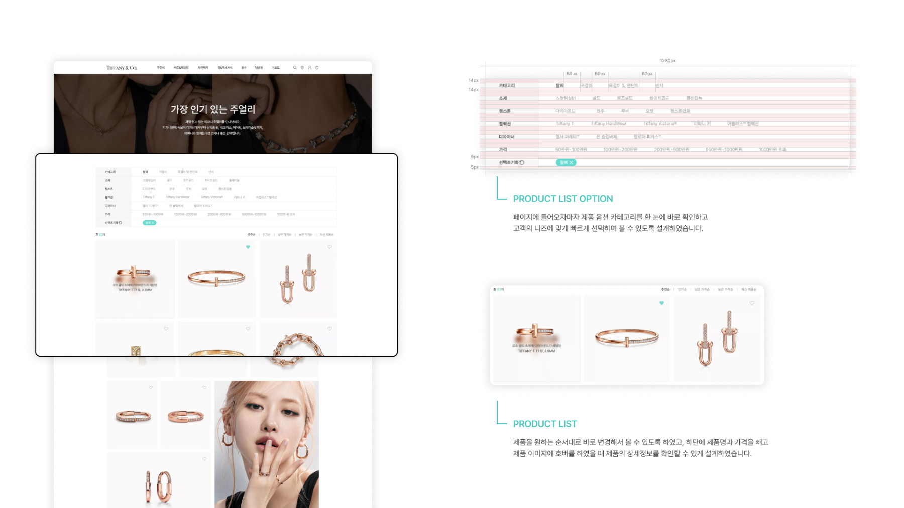
08 · Product detail
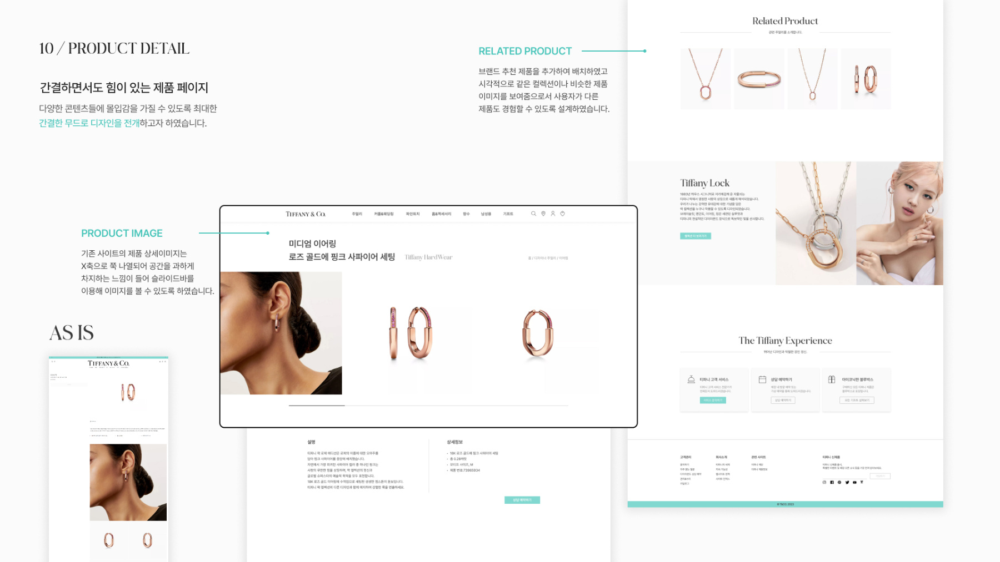
09 · Final screens
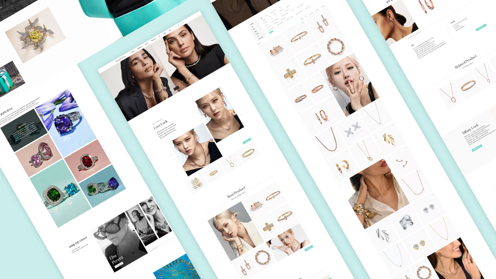